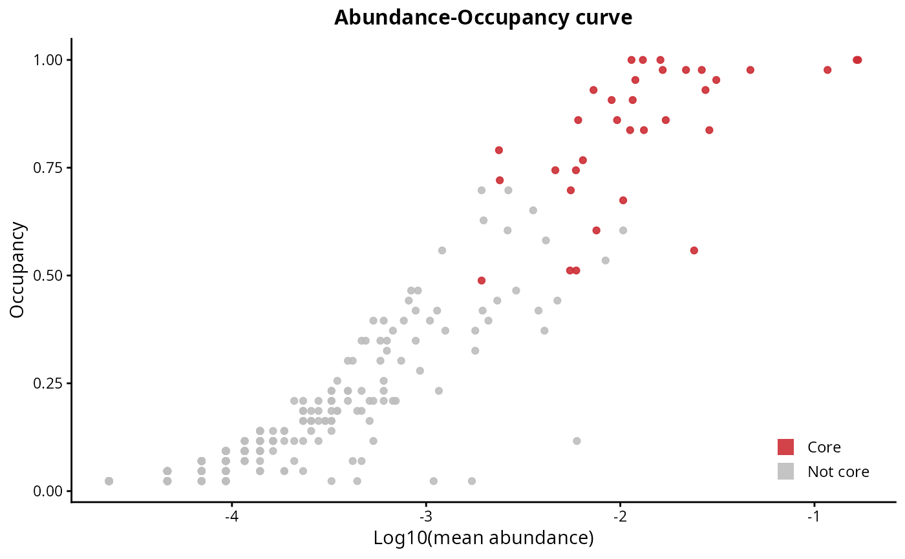

Plot Abundance-Occupancy Curve and Display the Core Taxa
Source:R/plot_abundance_occupancy.R
plot_abundance_occupancy.RdCreates a scatter plot showing the relationship between mean relative abundance and occupancy (occurrence frequency) of taxa, with core taxa highlighted.
Arguments
- core_result
A list object returned by
identify_core, containing at minimum:occupancy_abundance: A data frame with columnsotu,otu_rel(mean relative abundance), andotu_occ(occupancy).elbow_core: Character vector of OTU IDs identified as core using the "elbow" method.increase_core: Character vector of OTU IDs identified as core using the "increase" method.
- core_set
Character string specifying which core set to highlight. Must be either "elbow" or "increase" (Default elbow).
Value
A ggplot object showing the abundance-occupancy plot with core taxa highlighted in red and non-core taxa in grey. The x-axis shows log10-transformed mean abundance and the y-axis shows occupancy (0-1).
Details
The function creates a scatter plot where each point represents a taxon (i.e. ASV or OTU). Core taxa (as defined by the selected method) are shown in red, while non-core taxa are shown in grey. The plot uses a log10 scale for abundance to better visualize the full range of abundances typically found in microbiome data.
Examples
# \donttest{
library(phyloseq)
library(BRCore)
# Generate an object from `identify_core()` and then plot
data("switchgrass", package = "BRCore")
switchgrass_core <- identify_core(
physeq_obj = switchgrass,
priority_var = "sampling_date",
increase_value = 0.02,
abundance_weight = 0,
seed = 1234
)
#> Seed used: 1234
#> ✔ Input phyloseq object is valid!
#> ℹ otu_table() is rarefied at a depth of: 1000
#> ℹ No taxonomy found (or empty). Continuing without taxonomy.
#> ✔ Core prioritizing variable: sampling_date
#> ℹ Ranking OTUs based on BC dissimilarity, starting at 2026-04-21 12:00:38.530607
#> ✔ Elbow method identified 3 core OTUs
#> ✔ % increase method identified 34 core OTUs
#> ✔ Analysis complete!
plot_abundance_occupancy(
core_result = switchgrass_core,
core_set = "increase"
)

# }